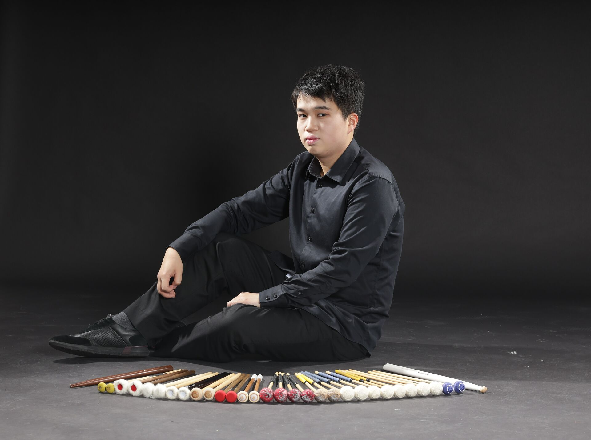
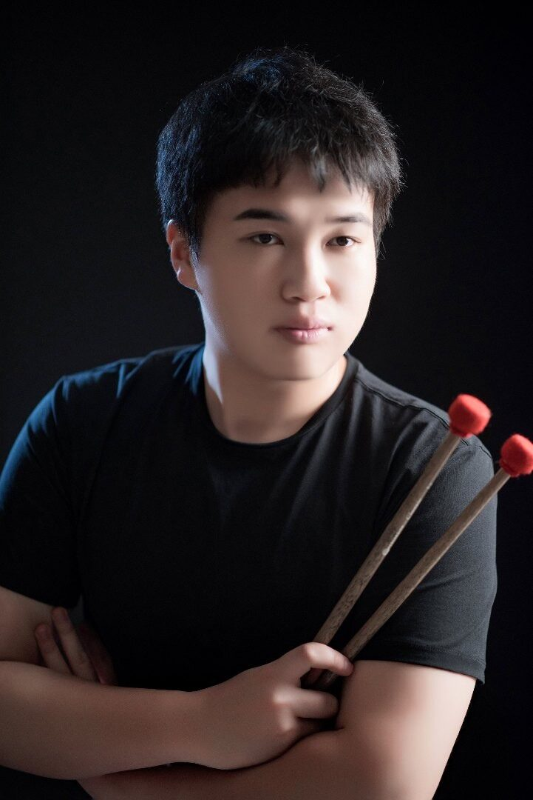

ИСПОЛНЕНИЕ + АЛГОРИТМИЧЕСКАЯ ВИЗУАЛИЗАЦИЯA Cool Gadget
A Cool Gadget
for Tambourine
Casey Cangelosi
Ли Чжочэнь — бубен, автор визуального алгоритма.
Открыть на YouTube ↗
МУЗЫКА × АЛГОРИТМЫ × ВИЗУАЛЬНОЕ ИСКУССТВО
Исполнитель на ударных инструментах.
Художник цифрового пространства.
Я соединяю искусство игры на ударных инструментах с алгоритмическим и цифровым визуальным искусством.
Родом из Шанхая. В настоящее время обучаюсь в ассистентуре-стажировке Московской государственной консерватории имени П. И. Чайковского по специальности «Искусство музыкально-инструментального исполнительства (ударные инструменты)».
Мой руководитель — профессор Валерий Михайлович Барков, заслуженный работник культуры Российской Федерации.
В центре моей практики — взаимодействие живого исполнения и современных технологий: от сольной и ансамблевой музыки до сценических проектов с алгоритмической визуализацией.

XIV Всекитайский конкурс исполнителей на ударных инструментах
Международный конкурс ударных инструментов DrumWave
IV Международный конкурс ударных инструментов IPEA
Министерство цифрового развития, связи и массовых коммуникаций Российской Федерации
Концертмейстер группы ударных инструментов Российско-китайского молодёжного симфонического оркестра.
В качестве приглашённого музыканта сотрудничал с коллективами:
Открытие Всемирной конференции по искусственному интеллекту (WAIC, Шанхай) · Шанхайский летний музыкальный фестиваль (MISA) · Торжественный концерт к 76-летию дипломатических отношений России и Китая и 80-летию Победы во Второй мировой войне
МУЗЫКА × ИИ × ВИЗУАЛЬНЫЕ СИСТЕМЫ
Живое исполнение встречается с алгоритмическим изображением.
Я выступил инициатором и художественным руководителем проекта «Rhythm & Algorithms». Проект исследует взаимодействие сценического и алгоритмического искусства и направлен на создание многомерных иммерсивных форм представления.
Одно из направлений моей работы — авторская алгоритмическая визуализация, сопровождающая исполнение музыки для ударных инструментов.
Посмотреть пример ↗Три грани моей практики:
цифровое искусство, соло и камерная музыка.
Casey Cangelosi
Ли Чжочэнь — бубен, автор визуального алгоритма.
Открыть на YouTube ↗Из Сюиты № 5 для виолончели соло, до минор. Исполнение на маримбе — Ли Чжочэнь.
Первый тур XV конкурса исполнителей на духовых и ударных инструментах Московской консерватории.
Открыть на Bilibili ↗Étienne Perruchon · № 2–5.
Ли Чжочэнь — литавры; Цэн Ен Чин — виолончель.
Диалог ударных и струнных: ритмическая энергия и камерное взаимодействие.
Открыть на Bilibili ↗Если встроенный плеер недоступен, откройте запись по ссылке под видео.
КОНЦЕРТЫ · СОТРУДНИЧЕСТВО · ТВОРЧЕСКИЕ ПРОЕКТЫ